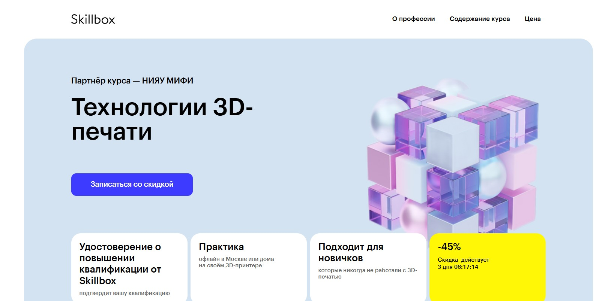
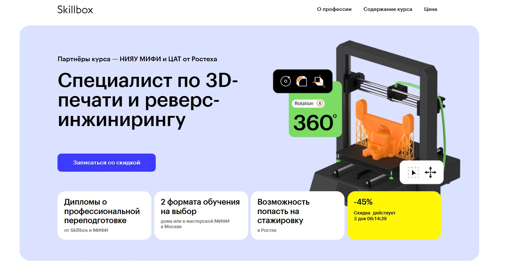
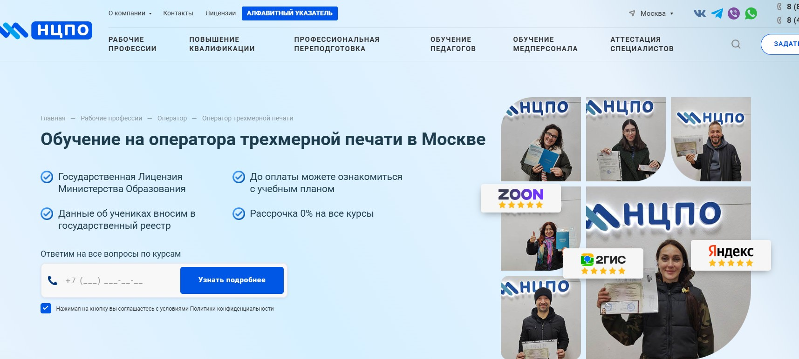
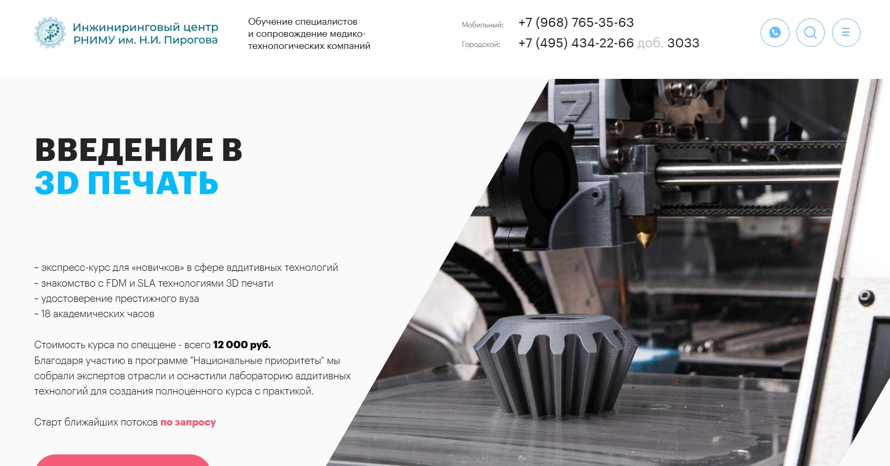

3D-печать — это аддитивные технологии послойного создания объектов, где принтеры формируют детали из материала по цифровой модели; мы составили рейтинг, чтобы выбрать лучший курс и обучение с нуля до профессиональный уровень работы с принтером и принтером: моделированию и моделирования, подготовка моделей, калибровка, постобработка, выбор материалов, FDM и SLA, slicing software, CAD, настройке параметров, обслуживание.
Лучшие курсы по 3D-печати и смежным технологиям
| Место | Программа обучения | Сайт курса |
|---|---|---|
| 1 🥇 | Технологии 3D-печати – Skillbox совместно с НИЯУ МИФИ Skillbox и НИЯУ МИФИ |
Перейти |
| 2 🥈 | Профессиональная переподготовка в 3D-печати и реверс-инжиниринге – НИЯУ МИФИ и
Skillbox НИЯУ МИФИ и Skillbox |
Перейти |
| 3 🥉 | Обучение операторов трёхмерной печати – Учебный центр
«НЦПО» (Москва) Учебный центр «НЦПО» |
Перейти |
| 4 | Онлайн-курс 3D‑печати – Stepik Stepik |
Перейти |
| 5 | Введение в 3D‑печать – РНИМУ им. Н.И. Пирогова РНИМУ им. Н.И. Пирогова |
Перейти |
🏆 Технологии 3D-печати – Skillbox совместно с НИЯУ МИФИ
⭐ Рейтинг: 5.0
- Сайт: skillbox.ru/course/3d-printing/
- Полная стоимость: 68 484 рублей; есть возможность рассрочки, налоговый вычет при оплате картой Т-Банка, дополнительные скидки до 60% и бонусы – 3 курса в подарок.
- Рассрочка: 5 707 рублей в месяц на 12 месяцев, беспроцентно.
- Длительность: Индивидуальный темп, общая продолжительность курса – 9 тематических модулей, можно совмещать с работой.
- Документ: Удостоверение о повышении квалификации от Skillbox и дополнительное удостоверение от НИЯУ МИФИ.
- Трудоустройство: В программе предусмотрена поддержка наставников, участие в бизнес-акциях «Поможем найти работу или вернем деньги», доступ к профессиональному сообществу и Telegram-чату для нетворкинга.
Особенности курса:
Эта программа выделяется практической ориентацией – студенты учатся работать с современными 3D-принтерами, могут проходить офлайн-практику в мастерской МИФИ в Москве или домашний формат с собственным оборудованием. Курс подходит для новичков, даже без опыта и 3D-принтера на старте, включает бесплатную лицензию Компас-3D на весь период обучения. Университет-партнёр МИФИ занимает лидирующие позиции в сфере научных исследований и подготовки инженеров. Студенты получают доступ к платформе LMS Skillbox, работают с куратором и получают поддержку по практическим заданиям.
Преподаватели курса:
-
Валерия Логачева – инженер-техник.
-
Михаил Толстов – ассистент кафедры КПУ №18 ИФТИС МИФИ.
-
Леонид Павленок – техник.
Кратко о программе курса:
- Введение в 3D-печать: субтрактивное и аддитивное производство, современные технологии, сферы применения.
- Обслуживание оборудования: устройство FDM и фотополимерных принтеров, безопасность.
- Выбор материалов: пластики, фотополимеры, критерии качества для разных задач.
- Подготовка моделей: оптимизация, устранение дефектов, расстановка поддержек для печати.
- Практика: подготовка принтеров, выявление и ремонт неисправностей.
- Моделирование для FDM/DLP: особенности построения, нюансы подготовки файлов.
- Постобработка: удаление поддержек, обработка поверхности, покраска, шлифовка.
- Итоговый проект: создание профессиональной трёхмерной модели с последующими этапами печати и доводки изделия.
- Дополнительные модули и вебинары для закрепления материала.
Чему научитесь:
По итогам обучения сможете проектировать и оптимизировать трёхмерные модели, выбирать материалы, обслуживать 3D-принтеры, устранять типовые дефекты и создавать готовые изделия для личных и коммерческих задач.
Преимущества и особенности:
- Гибкий формат обучения: онлайн или практикум в мастерской МИФИ, включая советы по подбору оборудования.
- Бесплатная лицензионная программа для моделирования Компас-3D.
- Индивидуальная поддержка наставника и доступ к экспертам с опытом в робототехнике, инженерии и дизайне.
- Закрытый чат для общения, обмена лайфхаками и выполнением совместных заданий.
- Пошаговое освоение технологий аддитивного и субтрактивного производства, моделирования и печати деталей.
- Два подтверждающих удостоверения по прохождению курса – от Skillbox и МИФИ.
- Возможность получить налоговый вычет за обучение.
- Бонус: 3 бесплатных курса в подарок при записи на программу.
Читайте отзывы учеников:
Студенты Skillbox часто отмечают доступность материала для новичков, удобный формат обучения, поддержку наставников, понятные пошаговые инструкции по работе с принтерами и моделями. Практичность курса помогает освоить реальное оборудование и получать востребованные навыки – выпускники положительно оценивают онлайн-общение, возможность совмещать учёбу с работой и живые разборы ошибок. Большинство удовлетворены качеством лекций и получили полезный опыт для старта своей профессиональной деятельности в цифровой инженерии.
🏆 Профессиональная переподготовка в 3D-печати и реверс-инжиниринге – НИЯУ МИФИ и Skillbox
⭐ Рейтинг: 5.0
- Сайт: skillbox.ru/course/reverse_engineering/
- Полная стоимость: 334 846 рублей, скидка до -45%, с возможностью налогового вычета и оплаты через Т-Банк.
- Рассрочка: От 5 400 рублей в месяц на 34 месяца. Первый платёж через 3 месяца.
- Длительность: 8 месяцев.
- Документ: Диплом о профессиональной переподготовке от Skillbox и/или Национального исследовательского ядерного университета «МИФИ».
- Трудоустройство: Возможность прохождения стажировки для лучших студентов в Центре аддитивных технологий Ростеха, помощь в портфолио и рекомендациях по трудоустройству.
Особенности курса:
Программа создана при поддержке НИЯУ МИФИ и экспертов аддитивных технологий Ростеха, что позволяет обучаться как в дистанционном формате, так и в современной мастерской в Москве. Курс выделяется акцентом на практические задачи и реальную работу с 3D-принтерами и современными сканерами. Глубокое изучение инженерного подхода к цифровому проектированию, прототипированию, обработке пластика, металла и различных смол, а также подготовка к истинно профессиональным задачам в сфере трёхмерной печати и реверс-инжиниринга.
Преподаватели курса:
-
Антон Токарев — старший преподаватель кафедры Института физики и технологий информационных систем НИЯУ МИФИ.
-
Станислав Сухов — специалист АО «ЦАТ» (Центр аддитивных технологий Ростеха).
-
Гарегин Асланян — ведущий специалист по цифровому производству.
-
Толстов Михаил — ассистент кафедры КПУ НИЯУ МИФИ.
Кратко о программе курса:
- Изучение современных промышленных и бытовых 3D-принтеров, основ эксплуатации и обслуживания.
- Выбор материалов: анализ пластиков, смол, металлов для 3D-печати и оптимизация под задачи.
- Цифровое проектирование в Компас 3D: разработка трёхмерных моделей и чертежей.
- Подготовка моделей к печати, методы настройки оборудования и устранения дефектов печати.
- Базовые и продвинутые техники реверс-инжиниринга, создание цифровых копий и прототипов по существующим образцам.
- Практикум: печать функциональных изделий, изготовление авторских фигурок и конструкций, конкурентное проектирование и создание визуализаций для презентаций.
- Финальные проекты: моделирование собственных деталей, анимация сборки/разборки изделий, подготовка реальных инженерных портфолио.
- Возможность участия в соревнованиях по робототехнике и дизайну трёхмерных моделей.
Чему научитесь:
Вы овладеете всеми ключевыми навыками для работы в индустрии 3D-печати: освоите современные принтеры, научитесь разрабатывать уникальные детали и копировать изделия, готовить их к печати и доводить до качественного результата.
Преимущества и особенности:
- Обучение на практике с реальным оборудованием топового уровня.
- Возможность пройти стажировку в промышленной компании Ростех.
- Два формата учебы: дистанционно или в мастерской с адресом в Москве.
- Углублённая программа по 3D-моделированию, печати и инжинирингу.
- Диплом сразу двух престижных образовательных организаций после окончания.
- Доступ к специализированному сообществу и поддержка профессиональных кураторов.
- Реальные проекты для портфолио — повышают шанс на достойную вакансию в инженерии и робототехнике.
- Гибкие условия оплаты обучения, рассрочка и налоговый вычет.
Читайте отзывы учеников:
Студенты чаще всего отмечают современную платформу, доступность материалов, индивидуальный подход от кураторов, большое количество практических заданий и пользу от итогового портфолио. Выпускники выделяют возможность консультаций с реальными инженерами и поддержку на этапе трудоустройства.
🎓 Обучение операторов трёхмерной печати – Учебный центр «НЦПО» (Москва)
⭐ Рейтинг: 5.0
- Сайт: ncpo.ru/rabochie-spetsialnosti/operator-trekhmernoy-pechati
- Полная стоимость: от 5 500 рублей. Доступна беспроцентная рассрочка, скидки до 1 000 рублей, возможность налогового вычета.
- Рассрочка: от 458 ₽ в месяц, срок зависит от программы обучения.
- Длительность: от 80 до 320 академических часов (индивидуально согласовывается).
- Документ: Свидетельство о профессии, квалификационное удостоверение, выписка из протокола обучения с внесением данных в реестр ФРДО.
- Трудоустройство: Поддержка в поиске работы, помощь при прохождении тендеров и для корпоративных заказчиков.
Особенности курса:
Программа охватывает практическое освоение аддитивных технологий и работу с трёхмерными принтерами. Слушатели учатся управлять современными 3D‑установками, подготавливать файлы и контролировать параметры печати, а также работать с широким спектром материалов — от полимеров и смол до металлических порошков и керамики. Обучение доступно как очно, так и дистанционно через онлайн‑платформу НЦПО с круглосуточным доступом к материалам и поддержкой кураторов. По окончании выдается комплект документов государственного образца, что подтверждает квалификацию на всей территории России.
Кратко о программе курса:
- Основы 3D‑печати, типы технологий и оборудования.
- Калибровка и настройка параметров печати.
- Подготовка цифровых моделей для прототипирования.
- Работа с материалами для промышленной печати.
- Финальная обработка готовых изделий.
- Аттестация и подготовка к квалификационному экзамену.
Чему научитесь:
После обучения сможете уверенно управлять 3D‑принтером, готовить файлы к печати, подбирать материалы и контролировать весь производственный процесс.
Преимущества и особенности:
- Лицензия Министерства образования РФ и внесение данных в госреестр ФРДО.
- Возможность пройти курс очно или онлайн с доступом 24/7.
- Выдача официальных документов, принимаемых работодателями по всей России.
- Скидки и беспроцентная рассрочка на обучение.
- Ускоренное оформление документов — выдача свидетельства и удостоверения за 1 день.
- Практические задания и поддержка опытных преподавателей.
- Бесплатная доставка документов по адресу.
- Помощь в трудоустройстве для выпускников.
Читайте отзывы учеников:
Выпускники отмечают высокое качество преподавания, удобный формат обучения без отрыва от работы, выгоду от доступных цен и полезность практических заданий. Многие называют курс удобным стартом в профессии и ценят оперативность в выдаче документов.
💻 Онлайн-курс 3D‑печати – Stepik

⭐ Рейтинг: 4.9
- Сайт: stepik.org/course/173281/promo
- Полная стоимость: 980 рублей. Доступна оплата от компании и возврат средств в течение 30 дней.
- Рассрочка: Возможность оформлять оплату в рассрочку (условия уточняются при покупке).
- Длительность: 6–8 часов в неделю, всего 32 урока и 63 теста.
- Документ: Сертификат Stepik, подтверждающий квалификацию в области 3D‑печати.
- Трудоустройство: Официальной программы нет, но полученный сертификат укрепляет резюме и повышает шансы на профильные вакансии.
Особенности курса:
Программа разработана для начинающих и помогает освоить все этапы работы с трёхмерным оборудованием: от моделирования до практической печати. Занятия проходят в онлайн‑формате с гибким графиком, что позволяет совмещать учебу с работой и другими делами. Ученики получают доступ к практическим заданиям, тестам и консультациям. Курс также рассматривает применение технологии в инженерии, архитектуре, медицине и других сферах. По завершении выдается сертификат, подтверждающий знания для профессионального использования.
Преподаватели курса:
-
Дмитрий Молозин — более 5 курсов по технологии печати, практический опыт, 390 подписчиков.
Кратко о программе курса:
- Основы технологии 3D‑печати.
- Моделирование объектов и подготовка цифровых файлов.
- Выбор материалов и настройка оборудования.
- Продвинутые техники печати.
- Применение аддитивных технологий в архитектуре, инженерии, медицине и бизнесе.
- Основы управления проектами печати и решение типовых ошибок.
Чему научитесь:
Системно освоите работу с 3D‑принтерами, научитесь готовить модели, выбирать материалы и использовать аддитивные технологии для профессиональных и личных проектов.
Преимущества и особенности:
- Низкая стоимость обучения и доступность для широкого круга слушателей.
- Гибкий график: учитесь в любом темпе и из любой точки мира.
- Сертификат Stepik, который можно подтвердить работодателю.
- Поддержка преподавателя и возможность задавать вопросы.
- Практическая отработка навыков на реальных примерах моделей.
- Программа подходит для студентов, инженеров, архитекторов и любителей.
Читайте отзывы учеников:
Студенты отмечают, что курс доступно объясняет основы работы с 3D‑принтером и дает уверенность в собственных навыках. Положительно оценивают удобную структуру уроков, систему тестов для самопроверки и возможность задавать вопросы преподавателям. Многие подчеркивают, что цена полностью оправдана.
🔬 Введение в 3D‑печать – РНИМУ им. Н.И. Пирогова
⭐ Рейтинг: 4.9
- Сайт: rsmu.tech/additive-technologies
- Полная стоимость: 12 000 рублей (спеццена, доступна скидка при бронировании).
- Рассрочка: Возможна индивидуальная договоренность.
- Длительность: 18 академических часов.
- Документ: Удостоверение о повышении квалификации государственного образца от РНИМУ им. Н.И. Пирогова.
- Трудоустройство: Прямой программы содействия нет, но диплом вуза повышает конкурентоспособность выпускников на рынке труда.
Особенности курса:
Программа рассчитана на тех, кто хочет быстро освоить основы аддитивных технологий. Обучение проходит очно в лаборатории Инжинирингового центра РНИМУ, с использованием современных принтеров Creality и Halot. Слушатели получают практику с FDM и SLA‑системами, знакомятся с технологией создания изделий и способами их обработки. Курс собрал лучших специалистов отрасли и оснащён современным оборудованием для «живого» обучения, что делает его особенно ценным для начинающих инженеров, дизайнеров и художников.
Преподаватели курса:
-
Никита Шульгин — преподаватель РНИМУ, ведущий инженер лаборатории аддитивных технологий.
Кратко о программе курса:
- Виды технологий 3D‑печати: FDM, SLA.
- Знакомство с видами принтеров и расходных материалов.
- Подготовка 3D‑модели и настройка печати.
- Производство изделия и постобработка деталей.
- Техническое обслуживание оборудования.
- Практическая работа с принтерами Creality Ender 3 S1 Pro, Halot One, Halot Sky.
Чему научитесь:
По окончании программы слушатели смогут работать с трёхмерными принтерами, разбираться в материалах и confidently применять аддитивные технологии в инженерии, дизайне или художественных проектах.
Преимущества и особенности:
- Очные занятия с практикой в современной лаборатории.
- Преподавание от экспертов инженерного центра РНИМУ.
- Удостоверение государственного образца, ценимое работодателями.
- Быстрый формат обучения — всего 18 часов.
- Обучение на актуальном оборудовании для FDM и SLA печати.
- Доступно для слушателей любой подготовки: от новичков до специалистов.
- Системный подход к изучению технологий трёхмерного прототипирования.
Читайте отзывы учеников:
Участники отмечают насыщенность практической частью курса, профессионализм преподавателей и полезность занятий с современными принтерами. Особенно ценят удостоверение РНИМУ, которое повышает шансы при приёме на работу и делает обучение престижным.